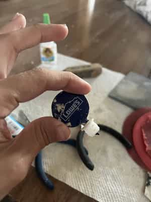

The Gyro Ball Experience
*click pictures for higher quality*
With Part 8 finally being announced (but not animated yet), I wanted to get into cosplay and dress up as someone from one of my favorite pieces of media: JoJo's Bizarre Adventure. I love this series so much. Plus, it helps me prep for Halloween and start making props and plans.
One of the cosplays I'm considering is Gyro Zeppeli from Steel Ball Run (JoJo Part 7). He's the angry, vulgar Italian guy who helps Johnny Joestar throughout the story.
I took some reference images and decided I wanted to make both a weathered version and a fully clean one. The files are the same — the only difference is that the hole is smaller and the weathered effect comes from paint and scraping, not the 3D print itself.
Modeling/CAD
I start with actually modeling it in blender, Simple low poly sphere to start (Icosphere technically) since its easier to shape stuff around then went into sculpting mode and put creases in the needs sports then smoothened them off around the edges
After the shape looked good, I increased the subdivision modifier to smooth it out even more. Then I used the Make Manifold Blender add-on to prep it for 3D printing.
My original plan was to put a pull-string keychain mechanism inside the ball, using the smaller side as a ring. That’s why I modeled a big cylinder hole inside. But I ended up putting the pulley mechanism outside the ball, which turned out to be easier.
Switching to Onshape
I made a plug using TPU to hold everything in place, then used a bit of glue and a lighter to solidify it. For future reference, I’d recommend waiting until you know the weight of the ball before doing this — otherwise, the string might sag. You want it to have a nice tight pull.
I modified the pull string keychain I got from my work into a ring for me to hold and retract it, so maybe this stl/3mf file will be niche unless someone has something similar to it.
Finally, the last 3D printed part is a rubber cap on the ring part (TPU) so that when I toss the ball it'll come back and hit the rubber hopefully soften and dampen the force so that the ring and ball won't get damaged over usage.
3d Printing time (Prusa Core One)
I'll add a gif of it printing... totally
I exported the model as both STL and 3MF just in case. In PrusaSlicer, I added organic supports around the center to make sure the sphere prints cleanly and doesn't create bad overhangs (mostly inside the model, thankfully). It took a while with 10–15% gyroid infill, but it should be worth it since the ball will come back fast and hit hard. I printed it in PLA using the “Structure” profile from Prusa.
Materials/Tools/Process
With Amazon Link(s)
Color Shift Green to Copper
I used a basic wood filler instead of Bondo. Both work fine — Bondo is stronger, but more expensive, and it becomes a rubbery layer that’s harder to sand. Wood filler dries quickly and fills gaps well. I layered it after sanding with 100–600 grit paper, repeating until most lines were gone.
(some tips for wood filler is that its solidable and able to get into all the gaps and layer lines and drys pretty quick so i cant wait to but a 80 gallon load for future proofing, this doesnt mean its the best use solution for all cases like for my daft punk helmet i needed to use bondo to get the harder cracked parts)
I used a soldering gun to melt the two pieces together and used wood filler and sanded it down
Something that is useful to have is a file or a stick to use the sandpaper to get the ridges, so might have those around as well also using a clamp to prevent moving. A small tube of super glue might be useful as well just in case.
 I've wondered which way was better, printing the pieces, filling , sanding then painting, or putting the pieces together then filling then sanding and then finally painting to see which one would give me the better result,
I've wondered which way was better, printing the pieces, filling , sanding then painting, or putting the pieces together then filling then sanding and then finally painting to see which one would give me the better result,
I'll post the results later to make you decide.
Granted my sanding and filling experience isn't the best and some parts are visible and horrible but other sides look good in my opinion.
Spray Painting and Priming
The paint I used was a white filler primer — I put down 3 layers of that and sanded it. Afterward, I applied a couple of coats of glossy black spray paint... put 2 coats of that and wet sanded it with 2000 grit (optional) because that's what's needed to get that special colour mix to work properly, I've chosen the Green/Brown mix to get those cool angles in the light and finally afterwards i put a couple of layers of clear spray paint to protect it from usage
white primer layer to sanddown later
whoops spoilers too ;3
2nd Coat of glossy black spray paint
final coat of green to copper and clear layer paint
Result /Files
Its not my best work, it has alot of issues, I see alot of things i could improve on, but its not bad for a first attempt